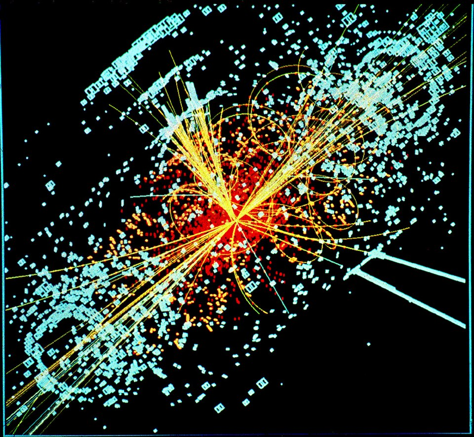

Hallada la partícula de Higgs: la ciencia encuentra la pieza que faltaba en el edificio de la materia
Los dos grandes experimentos del CERN anunciaron, ante un auditorio que hizo cola desde la madrugada como para un recital, el descubrimiento del bosón que explica por qué las cosas tienen masa. Peter Higgs, que lo predijo hace 48 años, lloraba en la platea.

La escena no se había visto nunca en un laboratorio: físicos durmiendo en el pasillo para conseguir asiento, aplausos de estadio y un anciano escocés de 83 años secándose los ojos mientras la sala entera lo ovacionaba de pie. Los portavoces de ATLAS y CMS, los dos detectores gigantes del Gran Colisionador de Hadrones, anunciaron esta mañana que ambos experimentos, trabajando a ciegas uno del otro, encontraron la misma partícula nueva con una certeza que en la jerga se llama cinco sigmas y en castellano se llama descubrimiento. Todo indica que es el bosón de Higgs, la pieza que la física buscaba desde hace medio siglo.
Explicarlo sin fórmulas es posible si se acepta una imagen: el universo entero está impregnado de un campo invisible, y las partículas que lo atraviesan se frenan más o menos según cuánto conversan con él; de ese frenarse nace lo que llamamos masa, y sin masa no habría átomos, ni estrellas, ni lectores de diarios. Peter Higgs y otros lo propusieron con lápiz y papel en 1964; comprobarlo exigió construir la máquina más grande jamás hecha por el hombre, un anillo de 27 kilómetros bajo la frontera franco-suiza donde los protones chocan a casi la velocidad de la luz, y revisar billones de esos choques durante años. «Nunca pensé que lo vería en vida», alcanzó a decir Higgs.
La máquina que lo encontró tiene su propia epopeya: aprobada hace casi dos décadas y construida por decenas de países a cien metros bajo tierra, se estrenó en 2008 con una avería humillante —una soldadura defectuosa, toneladas de helio líquido perdidas, un año de reparaciones— y desde entonces funciona a media potencia por prudencia, lo que vuelve el hallazgo doblemente meritorio. Los choques producen tanta información que ningún edificio podría almacenarla: una red mundial de centros de cómputo la reparte y la digiere, y en ese tamiz trabajan físicos de todos los acentos, argentinos incluidos, que la Universidad de Buenos Aires tiene gente con las manos en el detector ATLAS. La ciencia grande, se ve, ya no conoce otra escala que el planeta.
La jornada tuvo detalles de familia que la solemnidad no debería tapar: las diapositivas del anuncio, escritas en una tipografía de historieta que ya es broma mundial entre los sabios; el champán a media mañana en las salas de control; y un encuentro que tardó cuarenta y ocho años: el belga François Englert, que publicó la idea semanas antes que Higgs en 1964 y perdió a su compañero Brout sin verla confirmada, le estrechó hoy la mano al escocés por primera vez en la vida. Al apodo divino de la partícula, Higgs, ateo amable, le tiene alergia doble; consta que el nombre nació de un editor que quiso abreviar «la maldita partícula», que era como la llamaba un físico cansado de no encontrarla. La imprenta, una vez más, hizo teología.
La prensa la llama «la partícula de Dios», apodo de editor que los físicos detestan con toda razón: no prueba ni refuta dioses, prueba algo quizá más asombroso, que un puñado de monos sin pelo puede deducir con matemática pura una pieza oculta del mecanismo del mundo y fabricar la herramienta para verla, aunque tarde cincuenta años. En tiempos que dudan de todo, la jornada de Ginebra deja una noticia vieja y siempre nueva: la razón humana, cuando se le da tiempo y presupuesto, sigue cumpliendo sus promesas.